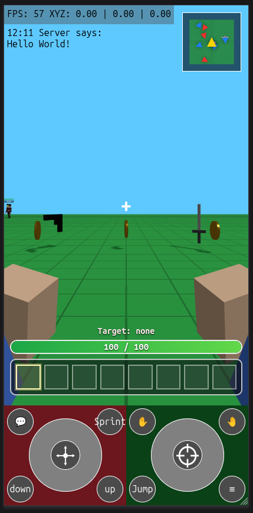
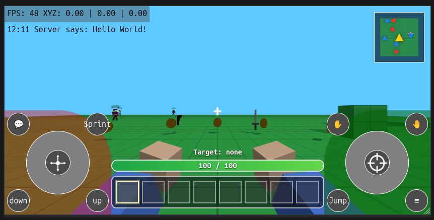

Definition: Kolorlando is a 3D game. A voxel world in which you play a voxel character.
done
not done
not used (done but not implemented)
to-improve
implemented-in
script.js, code/graphics/screen.js
code/graphics/screen.js, style.css, script.js
script.js, code/graphics/camera.js
Zoomable camera from First Person mode to Third Person Mode script.js, code/graphics/camera.js
script.js, code/graphics/camera.js
script.js, code/graphics/camera.js
8 item slots code/UI/inventory.js, game.html, style.css
code/UI/minimap.js, game.html, style.css
code/UI/chat.js, game.html, style.css
Shows FPS (Frames per second) and player coords (XYZ) script.js, game.html, style.css
Mobile only script.js, game.html, style.css
Shows Encyclopedia, Inventory, Character, Settings and About code/UI/menu.js, code/UI/menuPanelMarkup.js, game.html, multiplayer.html, style.css
script.js. Crouch has no dedicated file yet.
script.js
script.js, code/commands.js
script.js, code/commands.js
32 item slots, 99 stack item slots
code/UI/inventory.js, script.js, game.html
game.html, script.js, entityModel.js, sfcFace.js, index.html, /web/SquareFaceCreator/index.html, /web/SquareFaceCreator/script.js
game.html, style.css
weapons/goxels (gltf models scaled 0.1 and centered on X Y Z) script.js, itemAppearance.js
with health bar, selected voxel and game mode playerHud.js, code/UI/inventory.js, game.html, style.css
script.js, entityModel.js
script.js
Moving, pulling or pushing objects around from a distance
world, player,
world, player,
entity.js, maps/voxelandiaMap.js, maps/cityMap.js, script.js
No implementation file yet.
No implementation file yet.
vehicle.js, script.js
vehicle.js, script.js
script.js, game.html, style.css
script.js, code/graphics/screen.js


maps/voxelandiaMap.js, code/UI/inventory.js
script.js, maps/voxelandiaMap.js
code/UI/inventory.js, script.js, game.html
Item created
Select a blue voxel box, place blocks in bulk. Save and load voxel data
Edit voxels on a 16³ microvoxel basis. Creating custom voxels.
Self-explanatory
script.js, game.html
Shows debug information like collisions or raycasts code/commands.js, script.js
(enables flying) code/commands.js, script.js
(respawns player) code/commands.js, script.js
Remote sessions detection multiplayer.js, multiplayer.html, index.html
Low-latency updates on position, rotation and animation. multiplayer.js
index.html, Kusers.js, webscript.js, webstyle.css
code/UI/chat.js, game.html, multiplayer.html, style.css
Play Online Plan
- Kolorlando online with Supabase
- Online features
- anonymous players can join the world
- players can see other players in the world
- create a Supabase project
- design the database tables
- add player login or guest profiles
- connect the game to Supabase
- save and load game data
- add multiplayer or shared scores if needed
- test everything locally
- deploy the game online
- test the live version
0 - Most basic version:
Supabase Realtime Presence
- required custom tables: `0`
- anonymous login can use Supabase Auth anonymous users
- live player presence can use Supabase Realtime Presence
- Supabase still stores auth users internally, but that is not a table we create
Issues: SRP is laggy for low latency changes
1 - Supabase Broadcast
***A
- Broadcast + Presence plan
- Step 1
- keep Supabase anonymous auth as the player identity layer
- keep one shared room channel for the same world
- in Supabase, create the project and copy the project URL and anon key
- in Supabase Auth, enable anonymous sign-ins
- Step 2
- keep Presence only for lightweight state
- use Presence for join, leave, session id, player id, and maybe display name or color
- stop using Presence for frequent position updates
- anonymous auth gives a stable guest user id
- it does not guarantee one different player identity per browser tab
- Step 3
- add Broadcast for real-time gameplay messages
- use Broadcast for position, rotation, moving state, emotes, attacks, and temporary actions
- treat Broadcast as transient live traffic, not saved data
- Step 4
- on connect, subscribe to the room channel
- sign in anonymously first
- after subscription, publish Presence once so the player appears in the online list
- then start listening for Broadcast packets from other players
- Step 5
- send local transform updates through Broadcast on a throttle
- start around `10` sends per second
- only send when the player changed enough in position, rotation, or movement state
- keep a separate generated session id for each tab or page session
- use auth user id as player identity and session id as live instance identity
- Step 6
- keep remote players client-side
- when a Broadcast packet arrives, update that remote player's target transform
- smooth movement locally with interpolation so motion still looks fluid between packets
- Step 7
- use Presence sync to manage the roster
- create remote avatars when a new session appears
- remove remote avatars when a session disappears
- use Broadcast only to drive motion and temporary actions for sessions that are already present
- Step 8
- handle late join and fallback behavior
- when a player first appears through Presence, place them at a safe default until their first Broadcast transform arrives
- if Broadcast packets stop for a short time, keep the avatar visible but idle
- if Presence removes the session, delete the avatar
- Step 9
- keep database tables at `0` for this version
- add a `players` table only if you want persistent profile data
- add a `world_state` table only if world edits must survive after everyone leaves
- Step 10
- test in this order
- one tab: confirm connect, roster count, and no errors
- two tabs: confirm both players appear and movement is smoother than Presence-only
- three to five tabs: confirm traffic stays stable and players clean up correctly on leave
- remote network throttling: confirm interpolation still looks acceptable
- Step 11
- success criteria
- Presence updates the online roster correctly
- Broadcast drives movement with lower visible lag
- no custom tables are required for the first playable online version
Keeping one session for logged-in user
add userId to Presence
detect duplicate authenticated users
choose winner by timestamp
disconnect older tab
later, if needed, back it with a DB active_session
***
--------
- Custom tables for persistent data
- `players` for saved profile, color, last position, settings, or progress
- `world_state` if world changes must persist after everyone leaves
- `messages` for chat
code/UI/menu.js, code/UI/menuPanelMarkup.js, style.css
code/UI/menu.js, code/UI/menuPanelMarkup.js, game.html, multiplayer.html
UI only in: code/UI/menuPanelMarkup.js, game.html, multiplayer.html